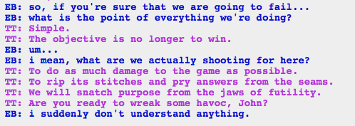

Oh my god that’s so fucking badass. Rose is the best.
Also I love the phrase “snatch purpose from the jaws of futility.” It speaks to me much more than the victory/defeat original. There are times when everything in life seems pointless, the idea of finding some purpose in it, even if it’s undermining the system, is poetic in a way.